Contents
Shear Force & Bending Moment Examples
% This program calculates the shear force and bending moment profiles, % draws the free body, shear force and bending moment diagrams of the % problem. % % Under the free body diagram, the equations of each section is clearly % written with Latex %
How to call the function
To use this program, you need to call the solve function on the instance of the SFBMProb object that has the complete problem description. You first create the SFBMProb Object and then add the loads in no partcular order.
How to create the SFBMProb object
create an instance of SFBMProb by calling "SFBMProb" with three arguments. The first is the name of the problem. For instance, "Example 1", the second argument is Length of the beam, and the third is locations of the supports.
prob = SFBMProb(name, length, supports)
%%- Cantilever % If the problem is a cantilever problem, then you have only one clamped % support, at the beginning or end of the beam. In such a case, the number is % second argument contains 2 elements instead of three. % % For instance, for a cantilever of length 20m, supported at the beginning, % prob = SFBMProb("Cantilever", 20, 0) % and if supported at the end, % prob = SFBMProb("Cantilever", 20, 20) %%- Beam on the floor % Its possible to have a problem in which the body is lying on the floor % without any point support. In such scenario, % prob = SFBMProb("BeamOnFloor", 20, []) %
Set Units
We have just two primary physical quantities here: Force and Legnth. ForceUnit default is KN LengthUnit default is m
% but to set a preferred unit, use % % prob.ForceUnit = "lb"; % prob.LengthUnit = "inch";
Load Description
Loads can be Force: such point or distributed load, or Torque the we call Moment here. In general Load would have value and location. The sign of the value can indicate whether it is pointing upwards, or downwards in the case of force, or clockwise/anticlockwise in case of moment. While moment and point load have scalars for value and location, distributed load have vector of value and location.
How to add loads to the object.
%%- Moment(Torque) % To add a clockwise moment of magnitude 3KN-m applied at point 5m % prob.AddMomentLoad(-3, 5); % For an anticlockwise moment of magnitude 7KN-m applied at point 8m % prob.AddMomentLoad(7, 8); % %%- Concentrated Load(Force) % To add a downward point load of magnitude 0.8KN applied at point 3m % prob.AddPointLoad(-0.8, 3); % For an upward point load of magnitude 5KN-m applied at point 7m % prob.AddMomentLoad(5, 7); % %%- Distributed Force % To add uniform upward distributed load of magnitude 2KN/m applied from point 3 to 5m % prob.AddDistLoad([2, 2], [3, 5]); % For linearly increasing distributed load 2KN/m to 5KN/m applied from point 3 to 5m % prob.AddDistLoad([2, 5], [3, 5]);
Example(1)
%Problem Name Name = 'Example 1'; %Length and Supports Length = 10; Supports = [2, 10]; % length = 10, supports at 2 and 10; prob = SFBMProb(Name, Length, Supports); %Set Unit prob.ForceUnit = 'lb'; prob.LengthUnit = 'inch'; %Concetrated Loads prob.AddPointLoad(-5, 0); % 5N downward at point 0 prob.AddPointLoad(-10, 8); % 10N downward at point 8 %Torques prob.AddMoment(10, 3); % ACW 10Nm at point 3 prob.AddMoment(-10, 7); % CW 10Nm at point 7 %Solve the problem prob.Solve()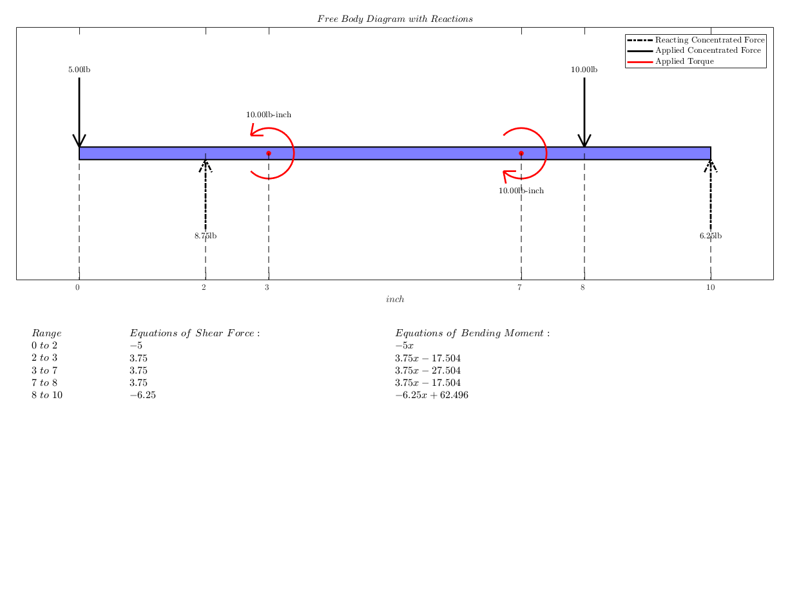 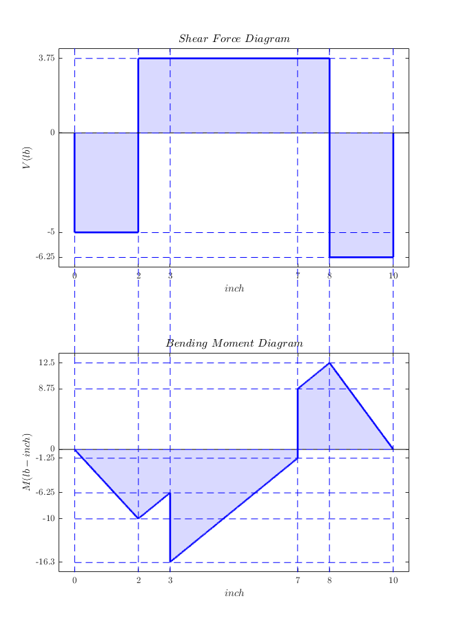
Example(2)
%Problem Name Name = 'Example 2'; %Length and Supports Length = 20; Supports = 0; % length = 20m, Cantilever supported at 0 m; prob = SFBMProb(Name, Length, Supports); %Concentrated Loads prob.AddPointLoad(-5, 6); % 5N downward at point 6 prob.AddPointLoad(-10, 13); % 10N downward at point 13 %Distributed Loads prob.AddDistLoad([5,5],[1,3]); % Constant 5N/m upwards from 1m to 3 m prob.AddDistLoad([-4,-4],[14,17]); % Constant 4N/m downwards from 14m to 17 m %Solve the problem prob.Solve()
 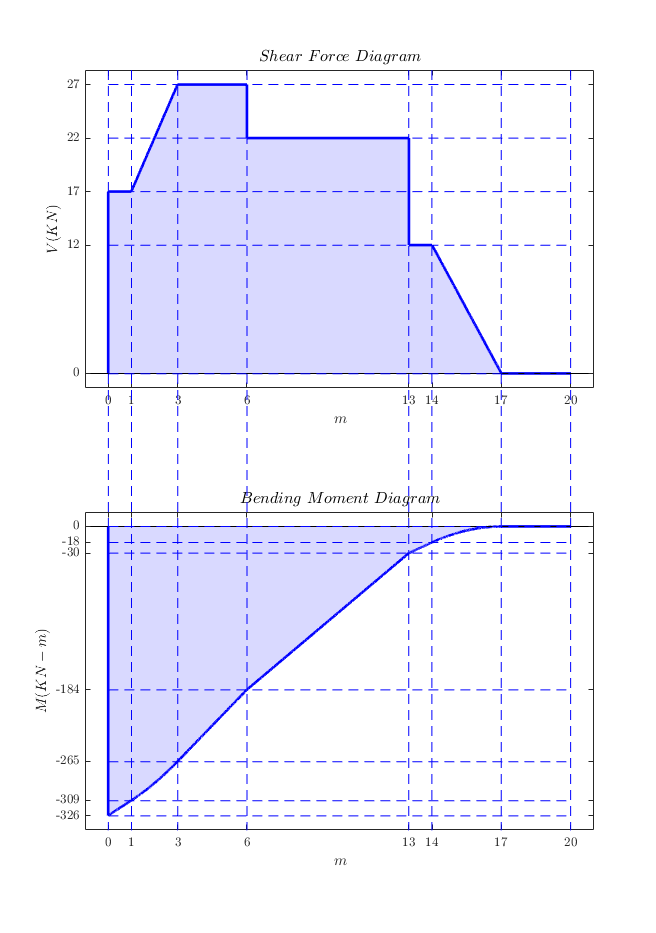
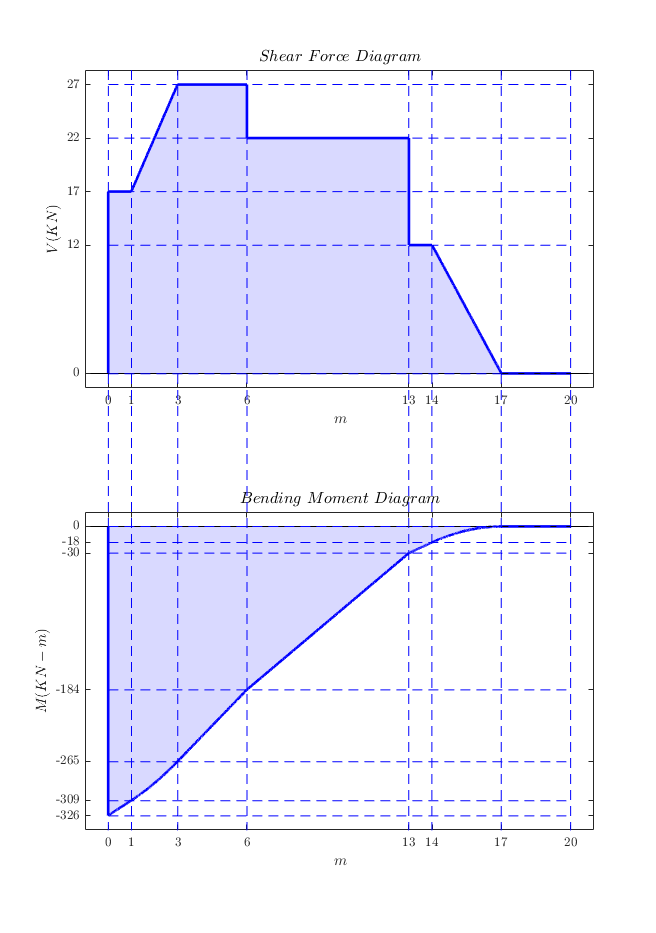 Example(3)
%Problem Name Name = 'Example 3'; % Length and Supports Length = 30; Supports = [0,20]; % length = 30m, supports at 0m and 20m; prob = SFBMProb(Name, Length, Supports); % Concentrated Loads prob.AddPointLoad(-20, 6); % 20N downward at point 6 prob.AddPointLoad(-10, 13); % 10N downward at point 13 prob.AddPointLoad(5, 27); % 5N upward at point 27 % Torques prob.AddMoment(50, 8); % ACW 50Nm at point 8 prob.AddMoment(-45, 25); % CW 45Nm at point 25 % Distributed Loads prob.AddDistLoad([7, 7], [1,3]); % Constant 7N/m upwards from 1m to 3m prob.AddDistLoad([-5,-5], [12,18]); % Constant 5N/m downwards from 12m to 18m % Solve the problem prob.Solve()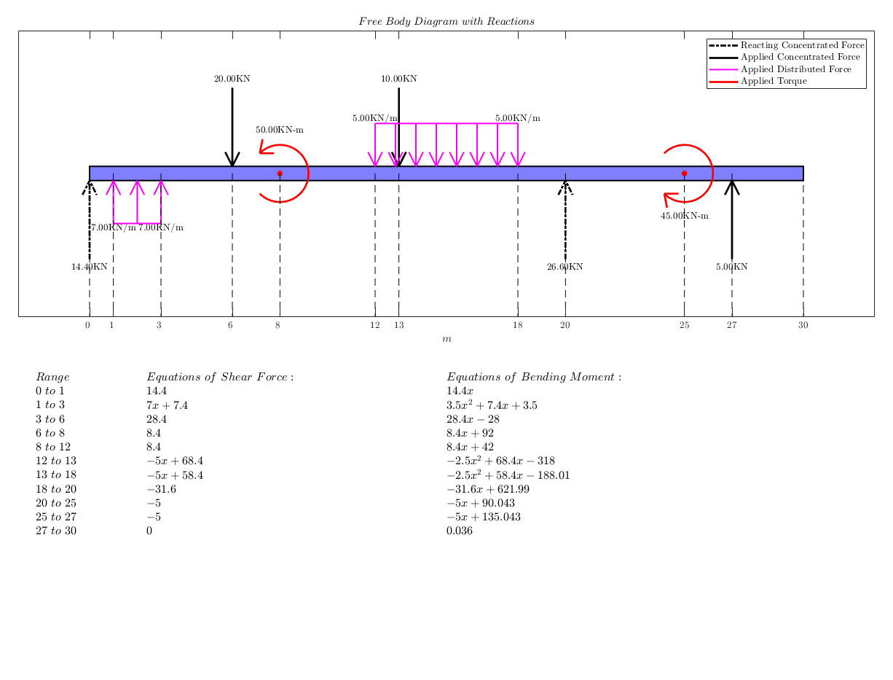 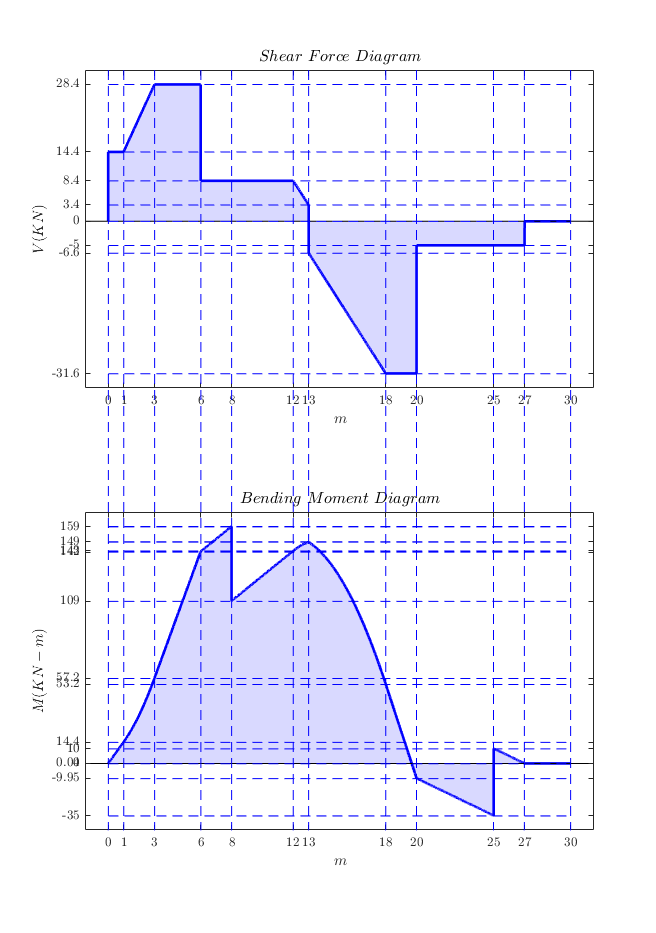
Example(4)
%Problem Name Name = 'Example 4'; % Length and Supports Length = 20; Supports = [5,20]; % length = 20m, supports at 5m and 20m; prob = SFBMProb(Name, Length, Supports); % Concentrated Loads prob.AddPointLoad(-2, 0); % 2N downward at point 0 % Torques prob.AddMoment(50, 8); % ACW 50Nm at point 8 prob.AddMoment(-45, 15); % CW 45Nm at point 15 % Distributed Loads prob.AddDistLoad([5, 5], [1,3]); % Constant 7N/m upwards from 1m to 3m prob.AddDistLoad([-4, -4], [14, 17]); % Constant 5N/m downwards from 12m to 18m % Solve the problem prob.Solve()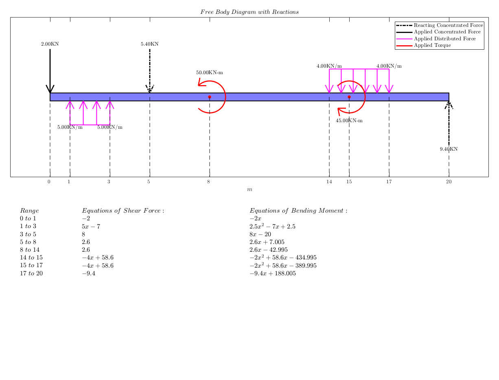
Example(5)
%Problem Name Name = 'Example 4'; % Length and Supports Length = 20; Supports = [6,20]; % length = 20m, supports at 5m and 20m; prob = SFBMProb(Name, Length, Supports); % Concetrated Loads prob.AddPointLoad(-2,0); % 2N downward at point 0 % Torques prob.AddMoment(10,8); % ACW 10Nm at point 8 prob.AddMoment(-15,12); % CW 10Nm at point 12 % Distributed Loads prob.AddDistLoad([5, 2, 5], [1, 3, 5]); % Quadratic profile distributed upwards force from 1m to 5m and prob.AddDistLoad([-4, -2, -4],[14, 16, 18]); % Quadratic profile distributed downwards force from 14m to 18m % Solve the problem prob.Solve()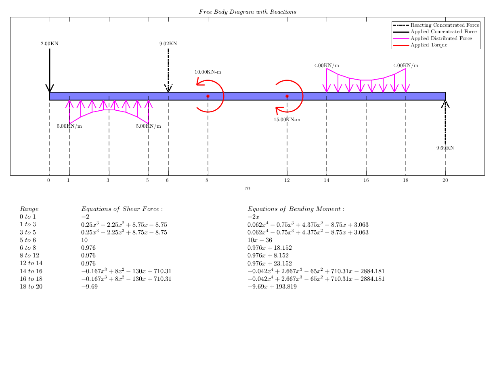 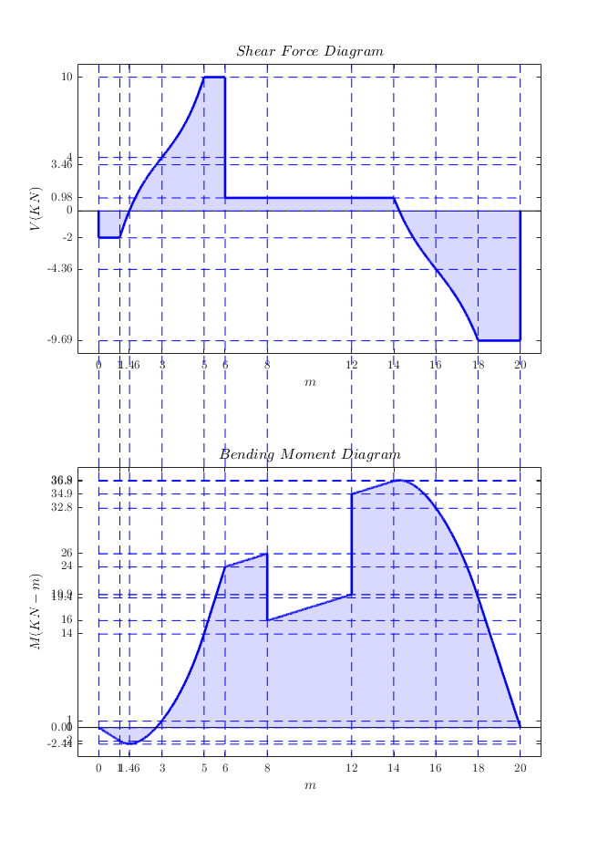
Example(6)
%Problem Name Name = 'Example 6'; % Length and Supports Length = 20; Supports = [6,20]; % length = 20m, supports at 5m and 20m; prob = SFBMProb(Name, Length, Supports); % Concetrated Loads prob.AddPointLoad(-2,0); % 2N downward at point 0 % Torques prob.AddMoment(10,8); % ACW 10Nm at point 8 prob.AddMoment(-15,12); % CW 10Nm at point 12 % Distributed Loads prob.AddDistLoad([5, 2], [1, 3]); % Linear profile upwards from 1m to 3m and prob.AddDistLoad([2, 5], [3, 5]); % Linear profile upwards from 3m to 5m and prob.AddDistLoad([-4, -2],[14, 16]); % Linear profile downwards from 14m to 16m prob.AddDistLoad([-2, -4],[16, 18]); % Linear profile downwards from 16m to 18m % Solve the problem prob.Solve()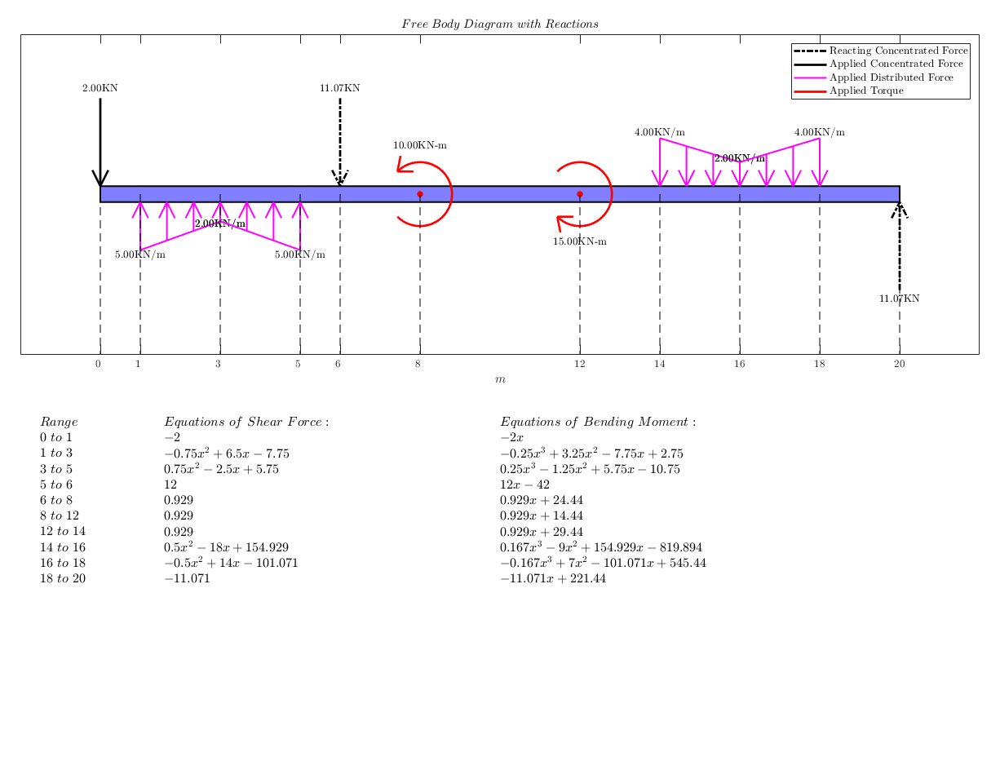 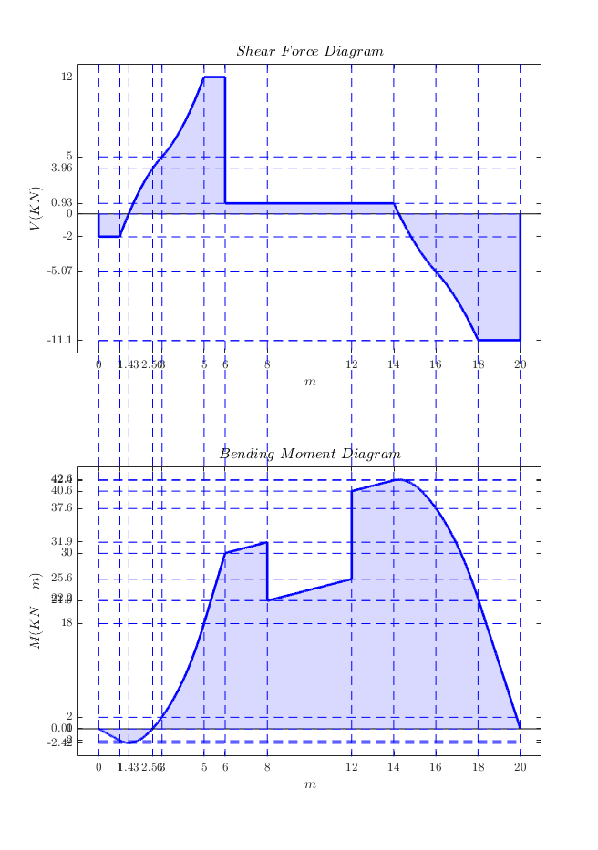
Example(7)
%Problem Name Name = 'Wikipedia'; Length = 50; Supports = 50; prob = SFBMProb(Name, Length, Supports); prob.Source = "https://en.wikipedia.org/wiki/Shear_and_moment_diagram#Calculating_shear_force_and_bending_moment"; %Set Units prob.ForceUnit = 'k'; prob.LengthUnit = 'ft'; % Concetrated Loads prob.AddPointLoad(-10,0); prob.AddPointLoad(25.3,10); prob.AddPointLoad(-3.5,25); % Torques prob.AddMoment(-50,37.5); % Distributed Loads prob.AddDistLoad([-1,-1], [10,25]); % Solve the problem prob.Solve()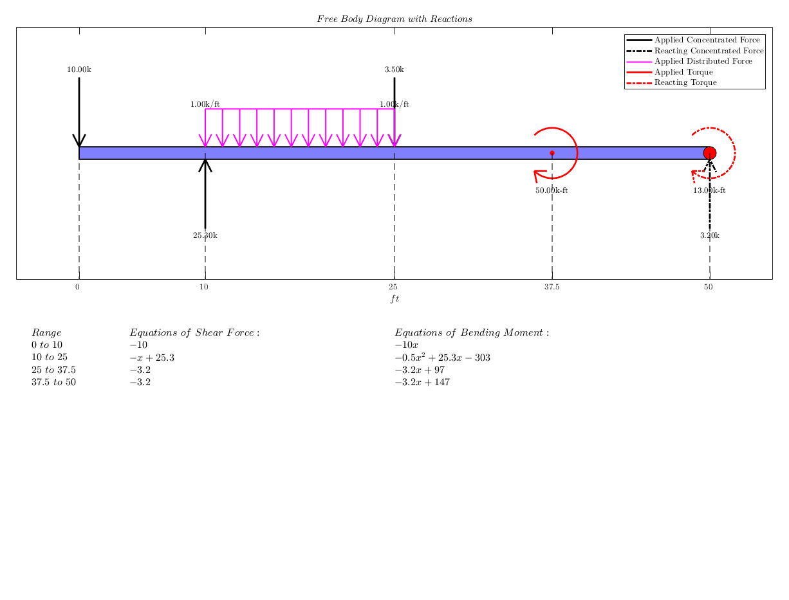 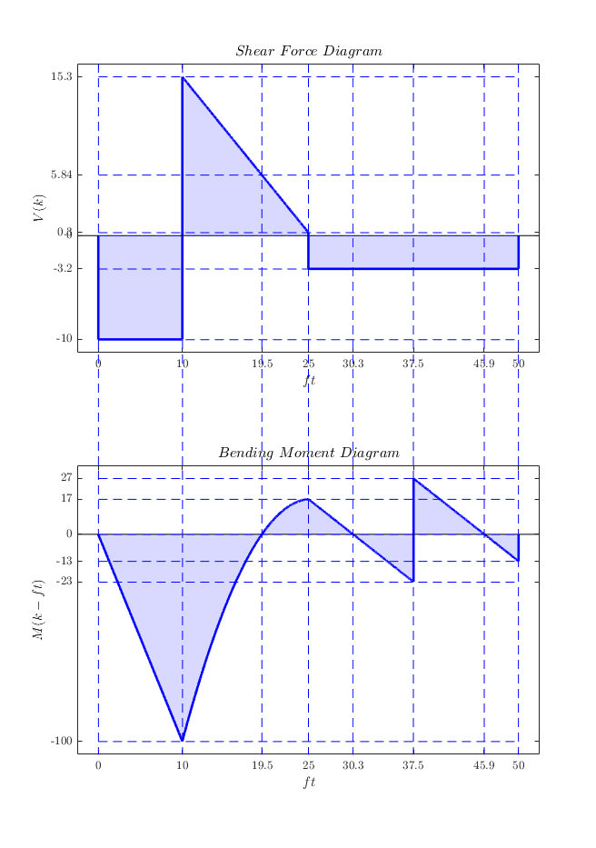